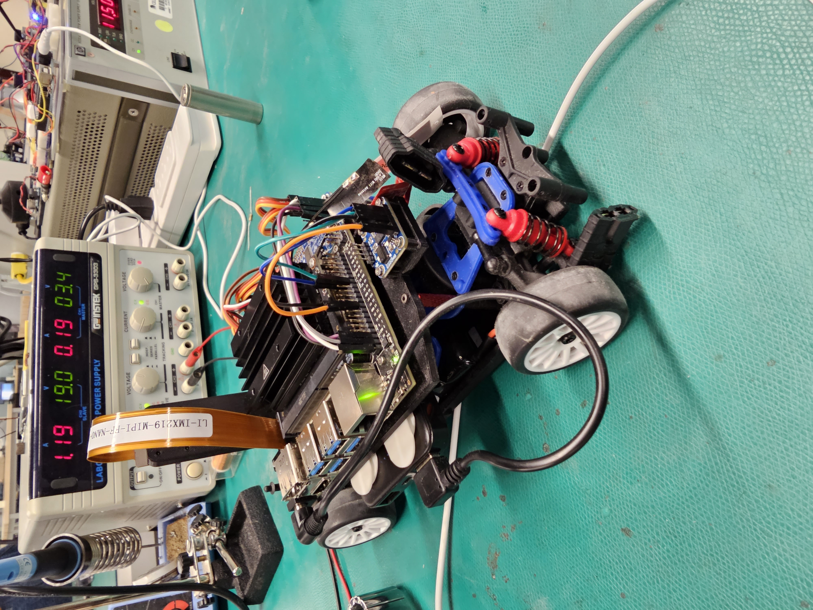

Autonomous Car Project (Lockheed Martin Sponsored)
Role: Software & Finance Lead | Binghamton University Senior Design
Team: Aslam Aliyu, Andrew Deoki, Patrick Nilan, Daniel Nissim
📌 Objective
Develop an autonomous vehicle using the NVIDIA JetRacer AI/ML platform that can drive autonomously on a track using live sensor input and camera vision, optimized through real-time machine learning.
⚙️ Hardware Components
- Jetson Nano Developer Kit
- CSI Wide-Angle Camera (Leopard Imaging IMX219)
- LaTrax Rally RC Chassis
- PWM Servo Motor Driver, RC Servo Multiplexer, IMU
- Electronic Speed Controller, WiFi Card, Battery Pack
💻 Software & Tools
- Python with Jupyter Notebook
- JetCam, OpenCV, PyTorch, torch2trt
- Real-time data training GUI for live corrections
🎯 Key Features
- Live ML model training with on-track data snapshots
- Real-time prediction and driving via Jetson Nano
- Line detection, obstacle detection, variable throttle
- Bounding boxes for stop signs and pedestrians
🧠 Training Methodology
Collected image data manually using a GUI interface where optimal driving direction was marked by clicking. Model was retrained during live test runs using real-time feedback to refine driving predictions.
📈 Results
- Achieved 95% object detection accuracy
- Reduced prediction latency by 0.03 seconds
- Improved detection precision by 32% through training optimization
📸 Project Gallery
